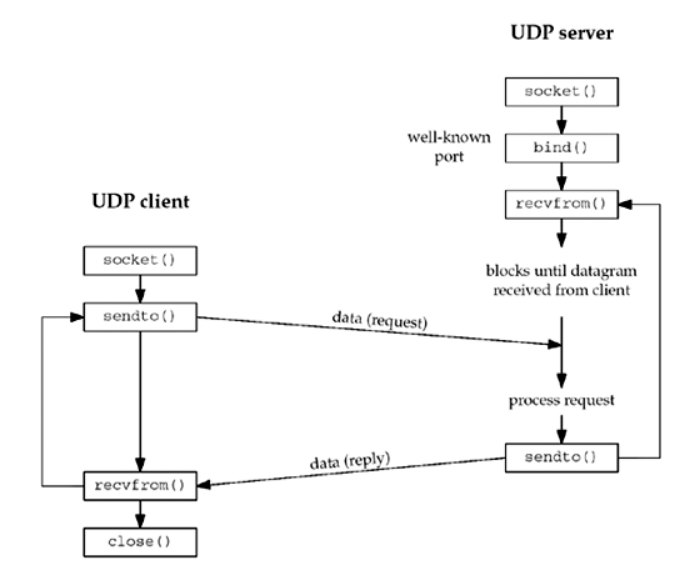

Zadanie 1. Na podstawie [ 6, 1.5] wyjaśnij zadania pełnione przez protokoły warstwy: łącza, sieciowej
i transportowej. Zainstaluj i uruchom program wireshark1. Przechwyć kilka pakietów protokołów UDP i TCP,
a następnie wytłumacz do czego służy kapsułkowanie (ang. encapsulation) i wyświetl (tj. kliknij dwukrotnie
na pakiet) nagłówki ramki, datagramu i segmentu. Zidentyfikuj adres źródłowy i docelowy pakietu. Czemu
protokoły warstwy łącza i sieciowej nie są używane do komunikacji między procesami użytkownika?
warstwa łącza - przesyła pakiet do kolejnego węzła
warstwa sieciowa - zawiera adresy IP nadawcy i odbiorcy, zajmuje sie
routingiem
warstwa transportowa - określa protokół dostarczenia pakietu, na
przykład TCP gwarantuje te SYN/ACK itd., a UDP nie
Zadanie 2. Na podstawie [7, 2.3 i 2.4] omów różnice między protokołami warstwy transportowej: datagra-
mowym udp(7) i połączeniowym tcp(7). Czym różni się komunikacja półdupleksowa od dupleksowej?
Jak TCP radzi sobie z zagubieniem segmentu lub faktem, że segmenty mogą przyjść do odbiorcy w innej
kolejności niż zostały wysłane? Skąd protokół TCP wie kiedy połączenie zostało zerwane? Jaki problem
rozwiązuje sterowanie przepływem (ang. flow control) implementowane przez TCP?
UDP jest connection-less, tcp nie tcp jest byte-stream, udp datagram has length tcp ma flow control, mówi ile bajtów może przyjąć w danym czasie (advertised window), udp nie
full-duplex oba urzadzenia moga nadawac i odbierac jednoczesnie (np. rozmowa telefoniczna) half-duplex albo jedna osoba nadaje i druga odbiera albo na odwrot
No raz ze mamy te ACK/SYN itd., wiec mozna poprosic o retransmisje dwa ze segmenty maja swoje numery
albo moze sie zakonczyc przez FIN albo timeout zwykly
At any time, the window is the amount of room currently available in the receive buffer, guaranteeing that the sender cannot overflow the receive buffe
Zadanie 3. Omów diagram [7, 4.1] komunikacji klient-serwer używającej protokołu tcp(7) przy pomocy
interfejsu gniazd strumieniowych. W którym momencie następuje związanie gniazda z adresem lokalnym
i zdalnym? Która ze stron komunikacji używa portów ulotnych (ang. ephemeral)? Co specyfikuje drugi
argument wywołania systemowego listen(2)? Z jakim numerem portu jest związane gniazdo przekazywane
do i zwracane z accept(2)? Skąd serwer wie, że klient zakończył połączenie?
Clients, on the other hand, normally use ephemeral ports, that is, short-lived ports.
These port numbers are normally assigned automatically by the transport protocol to
the client. Clients normally do not care about the value of the ephemeral port; the
client just needs to be certain that the ephemeral port is unique on the client host. The
transport protocol code guarantees this uniquenes
przy connect
klient
The backlog argument defines the maximum length to which the queue of pending connections for sockfd may grow. If a connection request arrives when the queue is full, the client may
receive an error with an indication of ECONNREFUSED or, if the underlying protocol supports retransmission, the request may be ignored so that a later reattempt at connection suc‐
ceeds
maskymalna liczba polaczen z jednego socketa
Jak serwer uzywa accept to przekazuje swoj deskryptor na ktorym nasluchuje, a dostaje deskryptor połączenia gdzie ma informacje o kliencie
klient robi close() i wysylany jest EOF
Zadanie 4. Omów diagram [ 7, 8.1] komunikacji klient-serwer używającej protokołu udp(7) przy pomocy
interfejsu gniazd datagramowych.
Czemu, w przeciwieństwie do TCP, serwer może rozpocząć pracę zaraz po wykonaniu funkcji bind(2)?
Z jakiej przyczyny interfejs read(2) i write(2) po stronie serwera może być niewystarczający?
Przedstaw semantykę operacji recvfrom(2) i sendto(2). Kiedy po stronie klienta następuje związanie gniazda UDP z adresem lokalnym?
Na podstawie [ 7, 8.11] zreferuj efekt jaki przynosi wykonanie connect(2) na gnieździe klienta.
Jakie ograniczenia poprzednio wymienionych funkcji zostały poprawione przez wywołania recvmsg(2) i sendmsg(2)?

Bo UDP nie nawiązuje połączenia. Po prostu jak dostanie request to go przetwarza i daje odpowiedz.
No w przypadku TCP najpierw nawiazujemy polaczenie i dostajemy socket. W przypadku UDP tak nie robimy, więc korzystamy z recvfrom zeby wypełnić socket z informacjami na temat nadawcy datagramu.
Read i write jest niewystarczający, bo w odróżnieniu od TCP nie nawiazujemy polaczenia przez accept(), wiec nie mamy odpowiedniego socketa, z ktorego mozemy korzystac.
ssize_t recvfrom(int socket, void *restrict buffer, size_t length,
int flags, struct sockaddr *restrict address,
socklen_t *restrict address_len);
ssize_t sendto(int socket, const void *message, size_t length,
int flags, const struct sockaddr *dest_addr,
socklen_t dest_len);
Związanie następuje przy sendto (?)
Dla UDP, jeśli zrobimy connect to będziemy akceptować datagramy od
tylko jednego adresu IP
korzystamy wtedy albo z read/write albo przy recvfrom/sendto w sockaddr
dalemy NULL, poniewaz adres zostal zapisany w socketcie.
Struktura generalnie wygląda tak:
struct msghdr {
void *msg_name; /* protocol address */
socklen_t msg_namelen; /* size of protocol address */
struct iovec *msg_iov; /* scatter/gather array */
int msg_iovlen; /* # elements in msg_iov */
void *msg_control; /* ancillary data (cmsghdr struct) */
socklen_t msg_controllen; /* length of ancillary data */
int msg_flags; /* flags returned by recvmsg() */
};
Możemy zauważyć scatter/gather array, czyli tak jak przy readv. Np. duży blok danych może być zapisany w kilku mniejszych.
 mozemy ustawic rozne control
informatoin np.
mozemy ustawic rozne control
informatoin np.
MSG_WAITALL = 0x100, /* Wait for a full request. */
// ...
MSG_DONTWAIT = 0x40, /* Nonblocking IO. */
 Więcej flag
Więcej flag
Zadanie 5. Przyjrzyjmy się warunkom brzegowym, które występują w trakcie używania interfejsu gniazd BSD.
Kiedy read(2) i write(2) na gniazdach strumieniowych zwracają short counts?
Skąd wiemy, że odebrany datagram UDP nie został obcięty przez jądro w trakcie kopiowania do przestrzeni użytkownika?
Z jakich przyczyn należy być przygotowanym na to, że operacje na gniazdach zwrócą «EINTR»?
Co się stanie, jeśli klient spróbuje zapisać do gniazda powiązanego z połączeniem, które serwer zdążył już zamknąć?
Dlaczego w kodzie funkcji «open_listenfd» użyto wywołania setsockopt(2) z opcją «SO_REUSEADDR» [ 3, 61.10]?
Co by się stało gdyby programista o tym zapomniał?
Jeśli robimy write(), a w socket send buffer nie ma miejsca, to
proces czeka az bedzie miejsce.
Jeśli natomiast socket jest nonblocking a nie ma miejsca, to zwróci
shortcount (tyle bajtów ile sie udalo skopiowac do bufora).
“Read operations on a blocking socket will always return a short count if some data is available,”
EINTR
Znamy długość datagramu
read(2), readv(2), write(2), writev(2), and ioctl(2) calls on "slow" devices.
A "slow" device is one where the I/O call may block for an indefinite time, for example, a terminal, pipe, or socket.
If an I/O call on a slow device has already transferred some data by the time it is interrupted by a signal handler,
then the call will return a success status (normally, the number of bytes transferred).
Note that a (local) disk is not a slow device according to this definition; I/O operations on disk devices are not interrupted by signals.
Socket interfaces: accept(2), connect(2), recv(2), recvfrom(2), recvmmsg(2), recvmsg(2), send(2), sendto(2), and sendmsg(2), unless a timeout has been set on the socket (see below).
dostaniemy EPIPE.
A previous invocation of the server that was connected to a client performed
an active close, either by calling close(), or by crashing (e.g., it was killed by a signal).
This leaves a TCP endpoint that remains in the TIME_WAIT state until the
2MSL timeout expires
Z tego co rozumiem, to po zakończeniu połączenia nasz socket jest w
stanie TIME_WAIT przez pewien czas, co ma obsługiwać jakieś edge
case’y.
Uniemożliwia to jednak szybki restart serwera.
Zadanie 6. Zmodyfikuj program «hostinfo.c» w taki sposób, aby wyświetlał adresy IPv4 oraz IPv6
dla danej nazwy serwera. Dodatkowo należy przekształcić nazwę usługi przekazanej jako opcjonalny trzeci
parametr programu na numer portu. Poniżej przykład:
# hostinfo www.google.com https
216.58.215.68:443
[2a00:1450:401b:803::2004]:443
Co należałoby zrobić, żeby program rozpoznawał usługę o nazwie «tftp»
# najpierw serwer
tcp 0 0 127.0.0.1:48252 127.0.0.1:7777 TIME_WAIT -
# pierwszy klient
tcp 0 0 127.0.0.1:7777 127.0.0.1:40550 ESTABLISHED 268598/./echoserver
tcp 0 0 127.0.0.1:40550 127.0.0.1:7777 ESTABLISHED 268688/./echoclient
# drugi klient
tcp 3 0 127.0.0.1:7777 127.0.0.1:40148 ESTABLISHED -
tcp 0 0 127.0.0.1:7777 127.0.0.1:40550 ESTABLISHED 268598/./echoserver
tcp 0 0 127.0.0.1:40550 127.0.0.1:7777 ESTABLISHED 268688/./echoclient
tcp 0 0 127.0.0.1:40148 127.0.0.1:7777 ESTABLISHED 268863/./echoclient
# w drugim procesie klienta nie dostajemy pinga
1-3 połączenie 4-7 hello world 8-10 zamkniecie klienta
sam client
[crusom@crusomcarbon so21_lista_9]$ ./echoserver 7777
Connected to localhost:48198
Rio_readlineb error: Connection reset by peer
sam serwer
tcp 1 0 127.0.0.1:39374 127.0.0.1:7777 CLOSE_WAIT 289810/echoclient
tcp 0 0 127.0.0.1:7777 127.0.0.1:39374 FIN_WAIT2 -
mimo ze serwer zostal zamkniety to pozostaje w stanie FIN_WAIT2